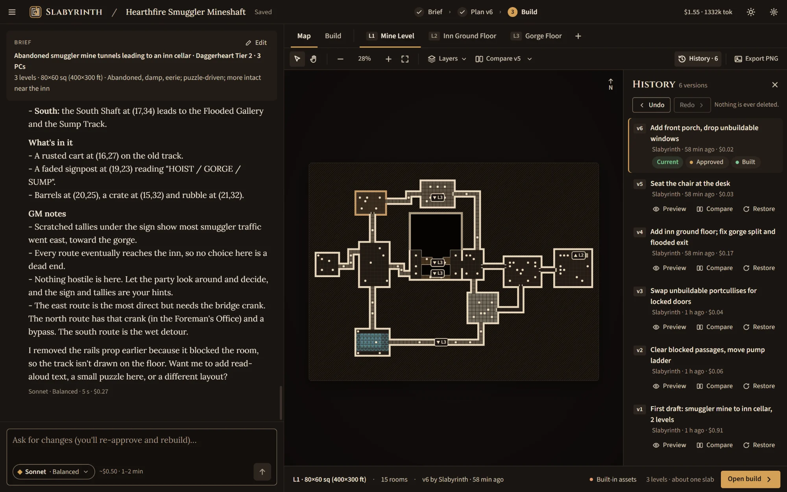
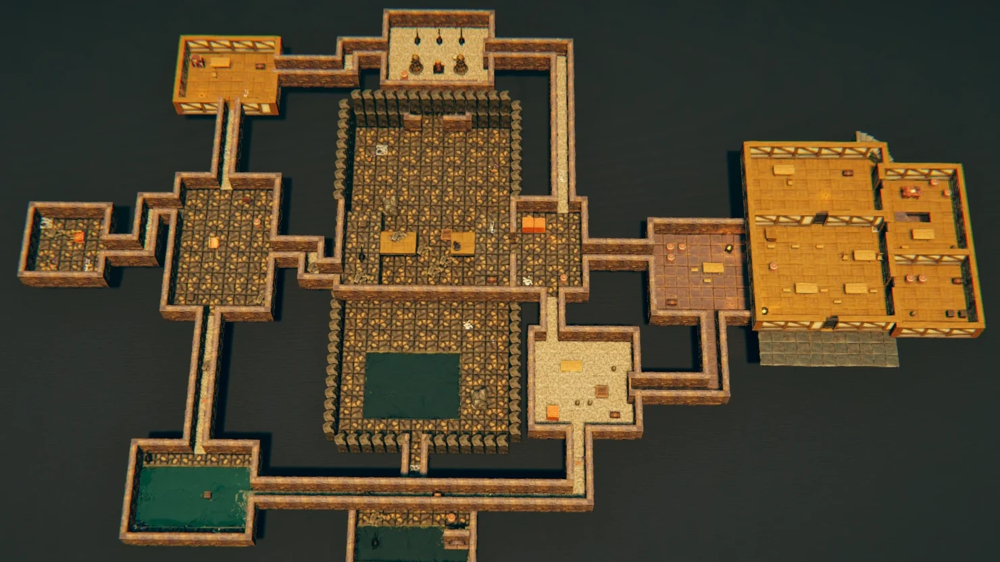

For TaleSpire game masters
Slabyrinth
Describe the dungeon you have in mind. Claude helps you draw it as a map, and Slabyrinth builds it so you can paste it straight into TaleSpire.
Available for Windows and Linux. Free and open source.

How it works
From an idea to your table in four steps
Every picture here shows the same map, start to finish.
-
Describe it
Tell Claude what you need, in your own words. This map began as an old smugglers' mine that winds its way to the cellar of an inn, with branching paths, broken bridges and puzzles instead of fights.

The first request, beside one of the levels it became. -
See the map
Your dungeon appears as an overhead map with numbered rooms and notes for the GM, one tab per level. Ask for changes in plain words. Slabyrinth points out problems, like a door that leads nowhere, so they get fixed before game night. Every version is kept, so you can always go back.

Six rounds of changes, each one kept. -
Build it
When you're happy, approve the map. Slabyrinth turns it into a slab, TaleSpire's copy-and-paste building block, with every level stacked at the right height.

All three levels, built and ready to copy. -
Paste it into TaleSpire
Copy it, open TaleSpire's build mode, press Ctrl+V and place it. Your whole dungeon arrives in one go.

The same map in TaleSpire. TaleSpire screenshot; TaleSpire is © Bouncyrock Entertainment.


Before you start
Good to know
-
You need TaleSpire
Install it on the same computer, so Slabyrinth builds with the pieces your game has.
-
You bring your own Claude key
Slabyrinth uses an API key you create at Anthropic, and Anthropic bills you for what you use. What a map costs varies: it depends on its size, the Claude model you choose and how many changes you ask for. The app shows an estimate before you send and a running total as you go.
-
Your key stays on your computer
It's stored securely on your PC and only ever sent to Anthropic. No sign-up, no tracking.
-
Free and open source
Slabyrinth itself costs nothing, and anyone can read its code.
Draw your next dungeon tonight
Available for Windows and Linux.
On Windows you may see “Windows protected your PC” the first time. Click More info, then Run anyway.